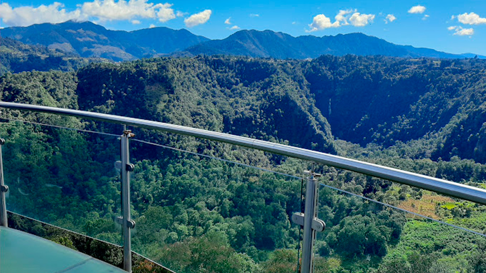
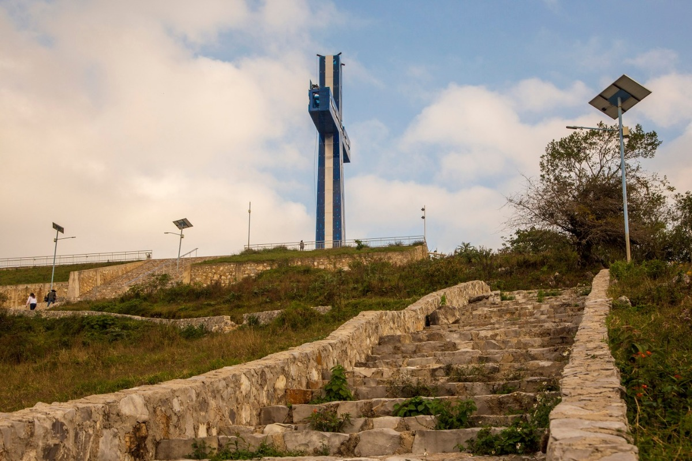

Información
Visitar este destino te hará sentir entre las nubes con aroma a café, porque si algo abunda aquí son cafetales y montañas que llenan de verde el paisaje. Aquí, en la Huasteca Poblana, podrás vivir experiencias inolvidables en un clima cálido, al caminar por sus calles, hacer senderismo en sus montañas y al contemplar la caída del agua en sus cascadas.
-
Camino Rural, Nactanca S/N, 73080 Xicotepec de Juárez, Pue. -
+527647641300 -
- Cruz Celestial de Xicotepec OficiaI


